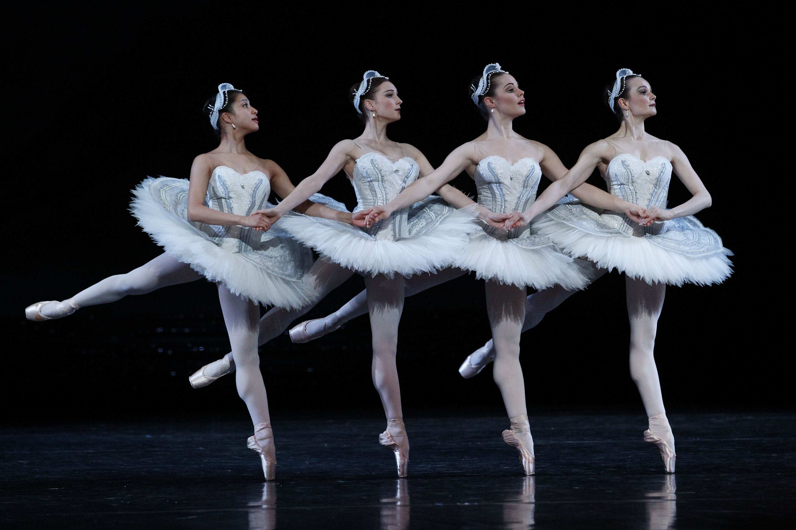
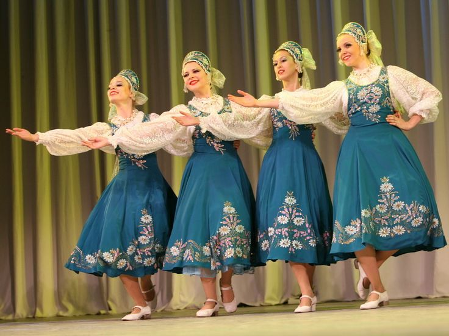
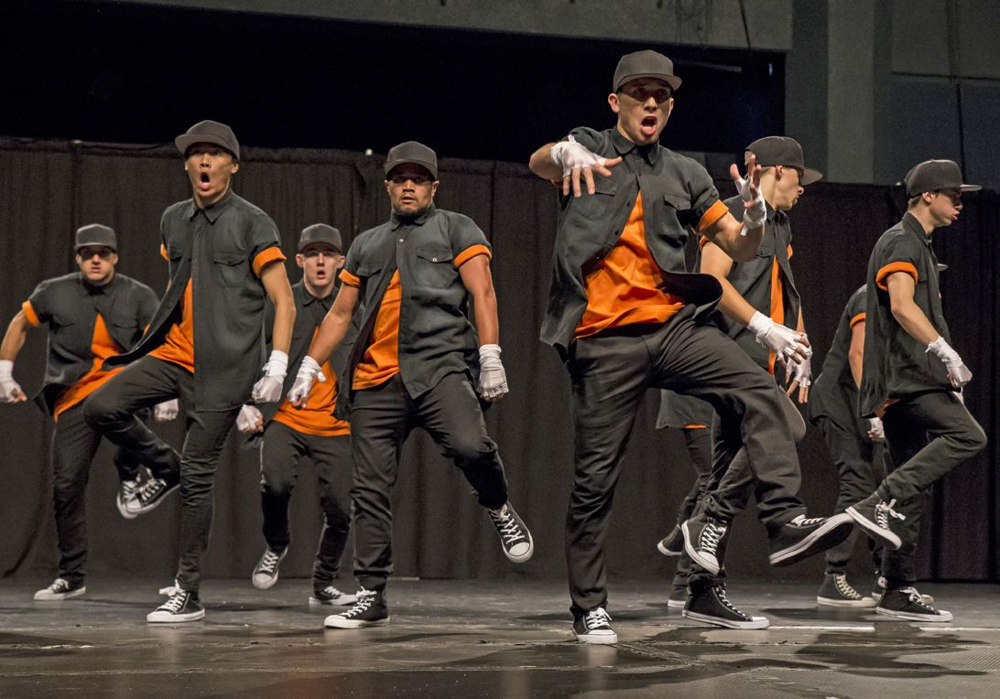
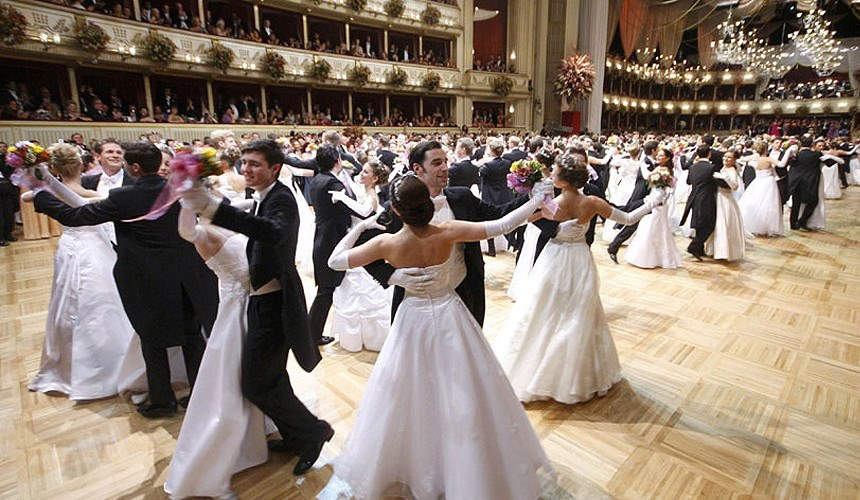

Стили танца
Существует очень много разных танцевальных стилей. Каждый из них уникален и прекрасен по-своему.
Классический балет
Балет - это очень красивый и грациозный танец. Танцоры выполняют сложные движения, часто стоя на пальцах ног (на пуантах).
Народные танцы
У каждого народа есть свои традиционные танцы. Русские хороводы, испанское фламенко, ирландские степ-танцы - все они рассказывают о культуре своего народа.
Современные стили
Хип-хоп, брейк-данс, джаз-модерн - эти стили появились относительно недавно. Они более свободные и позволяют танцору выражать свою индивидуальность.
Бальные танцы
Вальс, танго, самба - эти танцы исполняются в паре. Они очень элегантны и требуют хорошей координации между партнёрами.
